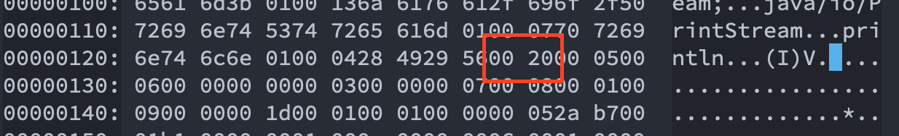
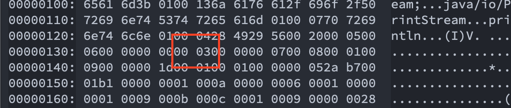
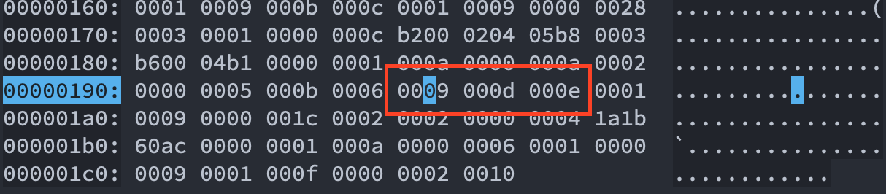
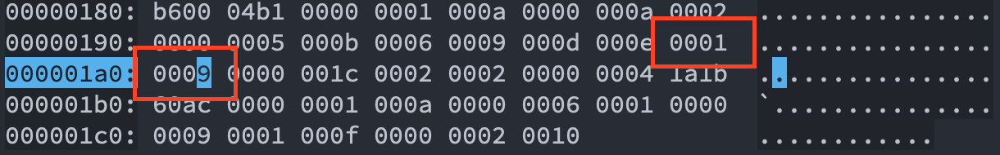

Java Class 探秘
文章目录
前言
Java 开发都知道 .java 文件编译后得到的是 .class 文件，这个文件是 Java 虚拟机能够识别加载的文件。有了这个字节码文件 Java 实现一次编写到处运行才成为可能。
然而我们平时都是写 .java 文件，很少接触 .class 文件，今天就来看看 .class 文件中有什么秘密，它长什么样子。
class 内部数据结构
class 文件中有两种数据结构，分别是无符号数和表
无符号数
无符号数有 u1、u2、u4、u8，分别表示1个字节、2个字节、4个字节和8个字节。
表
表由多个无符号数或者其他表作为数据项构成的符合数据类型。 class 中所有的表都是以 info 结尾。
class 文件结构
我们把 Java 文件编译成字节码之后，会按照下面所示的规则排列好
它们的数据类型如下所示
| 字段 | 名称 | 数据类型 | 数量 |
|---|---|---|---|
| magic number | 魔术数 | u4 | 1 |
| major version | 主版本号 | u2 | 1 |
| minor version | 副版本号 | u2 | 1 |
| constant_pool_conut | 常量池大小 | u2 | 1 |
| constant_pool | 常量池 | cp_info | constant_pool_conut-1 |
| access_flag | 访问标志 | u2 | 1 |
| this_class | 当前类索引 | u2 | 1 |
| super_class | 父类索引 | u2 | 1 |
| interfaces_count | 接口索引集合大小 | u2 | 1 |
| interfaces | 接口索引集合 | u2 | interfaces_count |
| fields_count | 字段索引集合大小 | u2 | 1 |
| fields | 字段索引集合 | field_info | fields_count |
| methods_count | 方法索引集合大小 | u2 | 1 |
| methods | 方法索引集合 | method_info | methods_count |
| attributes_count | 属性索引集合大小 | u2 | 1 |
| attributes | 属性索引集合 | attribute_info | attributes_count |
我们把如下文件编译成字节码
|
|
把编译好的 HelloWorld.class 在 Emacs 中使用 hexl-mode 打开，如下所示。
|
|
魔术数（magic number）
Java 中的前4个字节是 cafe babe ，也就是魔术数，表示的是可以被 Java 虚拟机执行的。如果不是以这个开头虚拟机就不会加载这个文件。
版本号
继魔术数之后是 class 文件的版本号，为 00 00 00 34 分为次版本号(minor version)和主版本号(major version)。也就是前面两个字节是次版本号，后面两个自己是主版本号。
所以这个文件的版本号转换为10进制后为 52.0 ，也就是 JDK1.8 。
常量池
版本号之后就是常量池，常量池相当于 class 的资源仓库。
常量池的大小通过常量池计数器来决定，常量池计数器等于常量池的大小+1，常量池中下标为 0 被虚拟机用作其他用途。
我们看到版本号后面的两个字节为 001f 转换为10进制为 31 ，所以常量池的大小为 30 。
常量池后面的就是各种表，保存了类的相关信息。例如：类名，父类名，方法名，参数名，参数类型等。常量池中有 14 种不同的表，如下所示
| 表名 | 标识位 | 描述 |
|---|---|---|
| CONSTANT_utf8_info | 1 | UTF-8编码字符串表 |
| CONSTANT_Integer_info | 3 | 整型常量表 |
| CONSTANT_Float_info | 4 | 浮点型常量表 |
| CONSTANT_Long_info | 5 | 长整型常量表 |
| CONSTANT_Double_info | 6 | 双精度浮点型常量表 |
| CONSTANT_Class_info | 7 | 类/接口 引用表 |
| CONSTANT_String_info | 8 | 字符串常量表 |
| CONSTANT_Fieldref_info | 9 | 字段引用表 |
| CONSTANT_MethodRef_info | 10 | 类的方法引用表 |
| CONSTANT_InterfaceMethodref_info | 11 | 接口的方法引用表 |
| CONSTANT_NameAndType_info | 12 | 字段或方法的名称和类型表 |
| CONSTANT_MethodHandle_info | 15 | 方法句柄表 |
| CONSTANT_MethodType_info | 16 | 方法类型表 |
| CONSTANT_invokeDynamic_info | 18 | 动态方法调用表 |
常量池中有这么多的表，所以在每个表中都有一个 u1 类型的 tag 用来标识是哪个表。
我们来看下 CONSTANT_Class_info 表的结构
|
|
我们接着往下看第一个常量， 他的 tag 是 0a 转换成 10 进制是10，从上面的表中可以知道， tag 为 10 的是 CONSTANT_MethodRef_info ，它的结构是
|
|
其中 class_index 指的是方法所属的类，占2个字节，也就是接来下的 0006 转换成10进制等于6，在常量池中的索引为6。
name_type_index 指的是方法的名称和类型，也是占两个字节，也就是 0011 ，转换成10进制等于 17，在常量池索引为 17 的地方。
单纯从16进制的 class 文件中很难看出来是什么，我们通过 javap -v HelloWorld.class 得到结果如下
|
|
这样就非常清楚能看出来常量池中第一个是索引是 Object 的构造方法。
访问标志
字节码中的访问标识有如下几种
| 访问标志 | 值 | 描述 |
|---|---|---|
| ACC_PUBLIC | 0x0001 | public 类型 |
| ACC_FINAL | 0x0010 | final 类型 |
| ACC_SUPER | 0x0020 | 是否允许使用invokespecial 字节码指令的新语义，JDK1.0.2之后编译出来的类的这个标识默认为True |
| ACC_INTERFACE | 0x0200 | 接口类型 |
| ACC_ABSTRACT | 0x0400 | 标识这是一个抽象类或是接口类型 |
| ACC_ANNOTATION | 0x2000 | 注解类型 |
| ACC_ENUM | 0x4000 | 枚举类型 |
字节码的访问标识在常量池之后，占两个字节。如下所示 
类索引、父类索引、接口索引计数器
访问标识之后就是类索引、父类索引和接口索引计数器。由于 Java 是单继承，可以实现多个接口所以接口要有一个计数器来确定有多少个接口。
可以看到在访问标识之后类索引就是 0005 ，父类索引是 0006 ，接口索引计数器是 0000 也就是没有实现接口。
在常量池中 0005 和 0006 分别是 HelloWorld 和 Object ，从字节码中看出 Object 是所有类的父类。
|
|
字段表
字段表跟在接口索引计数器后面，类中的字段也可能有多个，所以也需要一个计数器，但是我们没有写任何字段，所以这个值依然是 0000 。
虽然我没有写任何字段，但还是要了解一下字段表的结构，如下所示
|
|
字段的访问标识和类的有点不一样，如下所示
| 字段访问标识 | 值 | 描述 |
|---|---|---|
| ACC_PUBLIC | 0x0001 | public |
| ACC_PRIVATE | 0x0002 | private |
| ACC_PROTECTED | 0x0004 | protected |
| ACC_STATIC | 0x0008 | static |
| ACC_FINAL | 0x0010 | final |
| ACC_VOLATILE | 0x0040 | volatile |
| ACC_TRANSIENT | 0x0080 | transient |
| ACC_ENUM | 0x4000 | enum |
方法表
字段表接着往下走就是方法表，方法表和字段表一样也会有多个的情况，所以也有一个计数器。

从图中看出方法计数器的值为 0003 ，所以一共有三个方法，除了我们显示的写出来的 main 和 add 多出来的一个是构造方法。
方法表的结构如下
|
|
在方法表中也有 access_flags ，它和字段的也不一样，如下所示
| 访问标识 | 值 | 描述 |
|---|---|---|
| ACC_PUBLIC | 0x0001 | public |
| ACC_PRIVATE | 0x0002 | private |
| ACC_PROTECTED | 0x0004 | protected |
| ACC_STATIC | 0x0008 | static |
| ACC_FINAL | 0x0010 | final |
| ACC_SYNCHRONIZED | 0x0020 | synchronized |
| ACC_VARARGS | 0x0080 | 方法是否有形参 |
| ACC_NATIVE | 0x0100 | native |
| ACC_ABSTRACT | 0x0400 | abstract |
我们以 add 方法为例，如下所示

add 方法是用 public 和 static 修饰的，所以 access_flags 为 0009 。 接下来的两个字节为 000d 转换为 10 进制是 13，13 所对应的索引是 add 也就是方法名。再接下来是 000e 其对应的10进制是 14 也就是 int 也就是返回值类型。
|
|
属性表
最后来看一下属性表，之前在字段表中和方法表中都有看到过这么一个属性 attribute_info attributes; 它没有一个固定的结构，只要满足如下结构就行
|
|
JVM 中预定义了许多属性表，我们以 add 方法的 Code 属性表为例。我们接着字节码往下分析，得到 0001 和 0009

也就是 add 方法有一个属性表，属性表的索引为 9，9对应的就是 Code 属性表
|
|
Code 所对应的就是 add 方法的字节码指令，如下所示
|
|
总结
从上面看到 .class 文件还是比较复杂的，了解了这些我们更容易理解虚拟机是怎么运作的。有些问题就迎刃而解，例如：泛型被擦除了，在使用的时候会做一次强制类型转换等等。